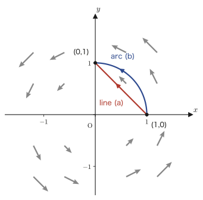

Chapter 20Line Integrals, Surface Integrals, and the Integral Theorems
By the end of Chapter 19 we had obtained three operators, $\nabla f$ (gradient), $\nabla\cdot\vec f$ (divergence), and $\nabla\times\vec f$ (curl), which tell us, for scalar fields and vector fields, “how they change at each location.” Each of them is a local quantity, defined by looking at a very small region around a single point. In this chapter we finally change our viewpoint and learn how to add up—that is, integrate—scalar fields and vector fields along a curve or over an entire surface. These are line integrals and surface integrals.
Mastering line integrals and surface integrals earns us two rewards. First, the mathematical essence of conservative forces and potentials, namely that “the answer is determined regardless of the path taken in between,” becomes visible as the single equation $\displaystyle\int_C\nabla f\cdot\dd\vec p=f(B)-f(A)$. Second, we arrive at two great theorems that connect the local quantities, divergence and curl, with the global quantities, line integrals and surface integrals—Gauss's divergence theorem and Stokes's theorem. These two theorems, which appear throughout the natural sciences, for example in Maxwell's equations of electromagnetism and the continuity equation of fluid mechanics, are the culmination of vector analysis.
- The definitions and computation of the line integrals $\displaystyle\int_C f\,\dd x,\ \int_C f\,\dd y,\ \int_C f\,\dd z,\ \int_C f\,\dd s$ of a scalar field $f$ along a curve $C:\vec p(t)=[x(t),y(t)]$ (in the plane) or $[x(t),y(t),z(t)]$ (in space) given in parametric form
- Reversal of an oriented curve $-C$: $\displaystyle\int_{-C}f\,\dd t=-\int_C f\,\dd t$, and additivity of line integrals over a piecewise smooth curve $C=C_1+C_2+\cdots+C_n$
- The tangential line integral $\displaystyle\int_C\vec f\cdot\dd\vec p=\int_C(f\,\dd x+g\,\dd y+h\,\dd z)$ of a vector field $\vec f$, and its physical meaning as work
- An application to electromagnetism (a Keio University entrance examination problem): the force acting on a rotating coil and the induced electromotive force
- The tangential line integral of a gradient vector $\nabla f$ does not depend on the path; it is determined only by the initial point and the terminal point: $\displaystyle\int_C\nabla f\cdot\dd\vec p=f(B)-f(A)$ (the distinction between state functions and path functions, and the gateway to conservative forces and potentials)
- The surface integral of a scalar field over a surface $S:\vec p(u,v)$ given in parametric form, $\displaystyle\iint_S f\,\dd S=\iint_D f\left|\pdiff{\vec p}{u}\times\pdiff{\vec p}{v}\right|\dd u\,\dd v$, and the special case of a graph of the form $z=\varphi(x,y)$, $\dd S=\sqrt{\varphi_x^2+\varphi_y^2+1}\,\dd x\,\dd y$
- The vector surface element $\dd\vec S=\hat n\,\dd S$ (the vector whose magnitude is the area $\dd S$ and whose direction is that of the outward normal $\hat n$)
- Gauss's divergence theorem $\displaystyle\iint_S\vec f\cdot\dd\vec S=\iiint_V(\nabla\cdot\vec f)\,\dd V$ ($S$ is a closed surface enclosing $V$), and a proof sketch based on the definition of divergence (Chapter 19)
- Stokes's theorem $\displaystyle\oint_C\vec f\cdot\dd\vec\ell=\iint_S(\nabla\times\vec f)\cdot\dd\vec S$, and a proof sketch based on the definition of curl (Chapter 19)
Source notes: Yasuhide Mochizuki, Mathematics Notes: Vector Analysis, pp. 41–50.
20.1 Line Integrals of Scalar Fields
The definite integral $\int_a^b h(x)\,\dd x$ that you learned in high school mathematics adds up a function $h$ over the straight interval $[a,b]$ on the $x$-axis. Here, in place of an interval, we prepare a curve $C$ that bends and winds through the plane or through space, and we consider adding up a scalar field $f$ along that curve. Just as we learned in Chapter 17, the curve $C$ is expressed using a parameter $t$, as follows:
$$ C:\ x=x(t),\ y=y(t)\qquad(a\le t\le b) $$As $t$ moves from $a$ to $b$, the point $P(t)=(x(t),y(t))$ moves along the curve $C$ from the starting point $A=P(a)$ to the ending point $B=P(b)$. This “direction in which $t$ increases” is the orientation of the curve $C$. A line integral is a computation in which we walk along this direction and collect the values of the scalar field.
Definition 20.1: Line integral of a planar scalar field
Suppose we are given a scalar field $f(x,y)$ in the plane and a curve $C:x=x(t),\,y=y(t)\ (a\le t\le b)$ given in parametric form. We define the line integral of $f$ along the curve $C$ as follows.
$$ \int_C f(x,y)\,\dd x := \int_a^b f\bigl(x(t),y(t)\bigr)\cdot x'(t)\,\dd t, \qquad \int_C f(x,y)\,\dd y := \int_a^b f\bigl(x(t),y(t)\bigr)\cdot y'(t)\,\dd t. $$In both cases the right-hand side is an ordinary definite integral in $t$ (here $x'(t)=\diff{x}{t}$ is the ordinary derivative with respect to $t$). In other words, a line integral is nothing other than a computation that translates an “integral over a curve” into “an ordinary definite integral over the parameter $t$.”
Math Note: The meaning of $\dd x=\diff{x}{t}\,\dd t$
The right-hand side of Definition 20.1 simply uses the substitution formula $\displaystyle\int f(x)\,\dd x=\int f(x(t))\,\diff{x}{t}\,\dd t$ for integrals of one variable as it stands. Recall the familiar rule of integration by substitution: “once we set $x=x(t)$, the differential is rewritten as $\dd x=\diff{x}{t}\,\dd t=x'(t)\,\dd t$.” The same holds for $\dd y=\diff{y}{t}\,\dd t=y'(t)\,\dd t$. Combining the two and letting $\vec p=[x,y]$ (the position vector of the point), we can also consider the following “vector-valued line integral”:
$$ \int_C f\,\dd\vec p:=\left[\int_C f\,\dd x,\ \int_C f\,\dd y\right] $$(This is merely a notational device: Definition 20.1 is applied component by component.)
The same definition extends as it stands to curves in space. When the curve is represented by the three equations $C:x=x(t),\,y=y(t),\,z=z(t)\ (a\le t\le b)$, we define the line integral of a scalar field $f(x,y,z)$ of three variables as follows.
Definition 20.2: Line integral of a spatial scalar field
$$ \int_C f(x,y,z)\,\dd x=\int_a^b f\cdot x'(t)\,\dd t,\quad \int_C f(x,y,z)\,\dd y=\int_a^b f\cdot y'(t)\,\dd t,\quad \int_C f(x,y,z)\,\dd z=\int_a^b f\cdot z'(t)\,\dd t. $$Combining all three by setting $\vec p=[x,y,z]$, we may also write $\displaystyle\int_C f\,\dd\vec p=\Bigl[\int_C f\,\dd x,\int_C f\,\dd y,\int_C f\,\dd z\Bigr]$.
The line integral with respect to the parameter $t$ itself (the case where we simply integrate in $t$ without multiplying by a weight) is likewise defined, by the same idea, as follows:
$$ \int_C f(x,y,z)\,\dd t=\int_a^b f\bigl(x(t),y(t),z(t)\bigr)\,\dd t $$This is the simplest case: instead of multiplying by $x'(t)$ as in Definition 20.2, we merely multiply by $1$.
Derivation: The line integral $\int_C f\,\dd s$ with respect to the arc-length parameter $s$
Instead of an abstract parameter $t$ such as time, we can also use the length $s$ of the curve itself as the parameter. Recall from Section 17.2 that the distance traveled when we advance along the curve by a very small $\dd t$ (the arc-length element) is the diagonal of a tiny rectangular box with the three sides $\dd x,\dd y,\dd z$, so by the Pythagorean theorem it can be written as
$$ \dd s=\sqrt{(\dd x)^2+(\dd y)^2+(\dd z)^2} $$Substituting $x=x(t)$ and so on and using $\dd x=x'(t)\dd t$, we obtain
$$ \dd s=\diff{s}{t}\cdot\dd t=\frac{\sqrt{(\dd x)^2+(\dd y)^2+(\dd z)^2}}{\dd t}\cdot\dd t =\sqrt{\left(\diff{x}{t}\right)^{\!2}+\left(\diff{y}{t}\right)^{\!2}+\left(\diff{z}{t}\right)^{\!2}}\ \dd t $$(We merely multiplied the numerator and the denominator by the same $\dd t$ and pushed it into the square root as $(\dd t)^2$.) Therefore, the line integral with respect to the arc length $s$ is defined by
\begin{equation} \int_C f(x,y,z)\,\dd s=\int_a^b f\bigl(x(t),y(t),z(t)\bigr)\sqrt{x'(t)^2+y'(t)^2+z'(t)^2}\;\dd t \label{eq:20-line-ds} \end{equation}If we take $f\equiv1$ (the constant function that is always $1$), we get $\displaystyle\int_C 1\,\dd s=\int_a^b\sqrt{x'^2+y'^2+z'^2}\,\dd t$, which is precisely the formula for the “length of a curve” that we learned in Chapter 17. In other words, $\int_C f\,\dd s$ is the expression for the length of a curve with the weight $f$ multiplied into its integrand, and it can be understood through the picture of, for example, “the total mass of a wire $C$ with density $f$.”
Line integrals have two basic properties concerning orientation. The first is that tracing the curve in the opposite direction reverses the sign. We write $-C$ for the curve obtained by tracing the curve $C$ backward from $B$ to $A$ (in terms of the parameter, this corresponds to moving $t$ from $b$ to $a$). Recalling that, in integration by substitution, interchanging the upper and lower limits of integration reverses the sign, we see that the following holds:
\begin{equation} \int_{-C} f\,\dd t=-\int_C f\,\dd t \label{eq:20-reverse} \end{equation}The second property is additivity: even if we divide a curve into several smooth arcs, the line integral equals the sum of the integrals over the parts. When the curve $C$ is a “piecewise smooth curve” formed by joining smooth arcs $C_1,C_2,\ldots,C_n$ at their endpoints (for example, the boundary of a quadrilateral, or a path made up of line segments), the following holds:
\begin{equation} \int_C f\,\dd s=\int_{C_1}f\,\dd s+\int_{C_2}f\,\dd s+\cdots+\int_{C_n}f\,\dd s \label{eq:20-additive} \end{equation}This is simply the property $\int_a^c=\int_a^b+\int_b^c$ of definite integrals, repeated as it stands along the curve.
Example 20.1: A line integral of a scalar field along a parabola
The scalar field $f(x,y)=xy$ and the curve $C:x=t,\ y=t^2\ (0\le t\le1)$ (a part of the parabola $y=x^2$) are given. Find each of $\displaystyle\int_C f\,\dd x$, $\displaystyle\int_C f\,\dd y$, and $\displaystyle\int_C f\,\dd s$.
Solution. From $x(t)=t,\ y(t)=t^2$ we get $x'(t)=1,\ y'(t)=2t$. Also, $f(x(t),y(t))=x(t)y(t)=t\cdot t^2=t^3$. We use Definition 20.1 as it stands.
$$ \int_C f\,\dd x=\int_0^1 t^3\cdot 1\,\dd t=\left[\frac{t^4}{4}\right]_0^1=\frac14 . $$ $$ \int_C f\,\dd y=\int_0^1 t^3\cdot 2t\,\dd t=\int_0^1 2t^4\,\dd t=\left[\frac{2t^5}{5}\right]_0^1=\frac25 . $$For $\int_C f\,\dd s$ we use Eq. \eqref{eq:20-line-ds}. Since $\sqrt{x'(t)^2+y'(t)^2}=\sqrt{1^2+(2t)^2}=\sqrt{1+4t^2}$, we have
$$ \int_C f\,\dd s=\int_0^1 t^3\sqrt{1+4t^2}\,\dd t . $$This integral can be computed by elementary means by setting $u=1+4t^2$ ($\dd u=8t\,\dd t$) and using $t^2=(u-1)/4$, and we obtain
$$ \int_C f\,\dd s=\frac{1}{120}+\frac{5\sqrt5}{24}\approx0.4742 $$(In the verification with SymPy, we confirmed that the symbolic result and the result of numerical integration agree to a precision of $10^{-9}$.) It is natural that $\int_C f\,\dd s$ is irrational whereas $\int_C f\,\dd x$ and $\int_C f\,\dd y$ turned out to be simple rational numbers—this is because the first two measure the “net effect in the $x$ direction and the $y$ direction,” whereas $\dd s$ measures the actual length of the path.
Example 20.2: A line integral of a scalar field along a helix (a space curve)
The helix in space $C:x=\cos t,\ y=\sin t,\ z=t\ (0\le t\le2\pi)$ (a curve that, viewed in the $xy$-plane, traces a circle of radius 1 while rising uniformly in the $z$ direction) and the scalar field $f(x,y,z)=z$ are given. Find $\displaystyle\int_C f\,\dd s$.
Solution. From $x'(t)=-\sin t,\ y'(t)=\cos t,\ z'(t)=1$,
$$ \sqrt{x'^2+y'^2+z'^2}=\sqrt{\sin^2t+\cos^2t+1}=\sqrt{1+1}=\sqrt2 $$(We used $\sin^2t+\cos^2t=1$. Since the helix rises in the height direction at a constant slope, it also makes sense geometrically that $\dd s/\dd t$ takes the constant value $\sqrt2$, independent of $t$.) Therefore
$$ \int_C z\,\dd s=\int_0^{2\pi} t\cdot\sqrt2\,\dd t=\sqrt2\left[\frac{t^2}{2}\right]_0^{2\pi}=\sqrt2\cdot2\pi^2=2\sqrt2\,\pi^2\approx27.92 . $$This example confirms that the definition of the line integral works as it stands for the case of three variables, and that $\dd s$ correctly measures the “distance walked” in actual space.
20.2 Line Integrals of Vector Fields (Tangential Line Integrals) and Applications
In Section 20.1 we integrated a scalar field (a field whose values are just numbers) along a curve. Now we consider integrating a vector field (a field with an arrow growing out of each point) $\vec f$ along a curve. The physical motivation is clear: if we think of $\vec f$ as a “force,” we want to compute the work done by the force when an object is moved along the curve $C$. In high school physics you learned “work = force × distance × $\cos\theta$” (where $\theta$ is the angle between the force and the displacement), and this is precisely the inner product of the force vector and the displacement vector. In the general case, where the curve bends and the force also varies from place to place, we need to add up this inner product along the curve, and that is the tangential line integral defined below.
Definition 20.3: Tangential line integral of a planar vector field
Given a planar vector field $\vec f(\vec p)=[f(x,y),\,g(x,y)]$ and a curve $C:\vec p(t)=[x(t),y(t)]\ (a\le t\le b)$, we define the line integral along the curve $C$ of the inner product of $\vec f(\vec p)$ and $\dd\vec p$ as follows.
$$ \int_C \vec f(\vec p)\cdot\dd\vec p := \int_C\bigl(f\,\dd x+g\,\dd y\bigr)=\int_C f\,\dd x+\int_C g\,\dd y . $$Each of the two line integrals on the right-hand side is exactly Definition 20.1 (the line integral of a scalar field), so we already know how to compute them. Substituting $\dd x=x'(t)\dd t,\ \dd y=y'(t)\dd t$, we obtain
$$ \int_C \vec f(\vec p)\cdot\left(\diff{\vec p}{t}\right)\dd t=\int_a^b f\cdot\diff{x}{t}\,\dd t+\int_a^b g\cdot\diff{y}{t}\,\dd t $$which reduces to ordinary definite integrals in $t$. Here $\diff{\vec p}{t}=\left[\diff{x}{t},\diff{y}{t}\right]$ is the tangent vector at each point of the curve $C$ (an arrow pointing in the direction in which the curve is heading at that very moment). In other words, the tangential line integral can be restated as the computation that “takes out only the component of the vector field $\vec f$ in the tangent direction of the curve and adds these up”—this is nothing other than the curved version of the high school physics idea “work = (component of the force in the direction of the displacement) × distance.”
The spatial case is defined in the same form.
Definition 20.4: Tangential line integral of a spatial vector field
For a spatial vector field $\vec f(\vec p)=[f,g,h]$ and a curve $C:\vec p(t)=[x(t),y(t),z(t)]\ (a\le t\le b)$,
$$ \int_C \vec f(\vec p)\cdot\dd\vec p=\int_C(f\,\dd x+g\,\dd y+h\,\dd z) =\int_a^b f\cdot\diff{x}{t}\,\dd t+\int_a^b g\cdot\diff{y}{t}\,\dd t+\int_a^b h\cdot\diff{z}{t}\,\dd t . $$For tangential line integrals, too, the two properties we saw in Section 20.1—reversal of orientation and additivity over piecewise smooth curves—continue to hold as they are.
\begin{equation} \int_{-C}\vec f\cdot\dd\vec p=-\int_C \vec f\cdot\dd\vec p, \qquad \int_C \vec f\cdot\dd\vec p=\int_{C_1}\vec f\cdot\dd\vec p+\int_{C_2}\vec f\cdot\dd\vec p+\cdots+\int_{C_n}\vec f\cdot\dd\vec p \quad(C=C_1+C_2+\cdots+C_n). \label{eq:20-vec-additive} \end{equation}The proof simply applies Eq. \eqref{eq:20-reverse} and Eq. \eqref{eq:20-additive} to each component ($f\,\dd x$, $g\,\dd y$, …) and adds the results.
Caution: A tangential line integral generally depends on the path
The line integral of a scalar field, $\int_C f\,\dd s$, did not depend on the orientation, because only $\dd s\gt 0$ appears in it; the tangential line integral $\int_C\vec f\cdot\dd\vec p$, however, can depend on both the orientation and the path. Even when two paths join the same two points $A,B$, the values can differ if the paths taken are different. Let us confirm this in the next example (in Section 20.3, conversely, we shall study “the special case in which the value is determined independently of the path”).
Example 20.3: A tangential line integral depends on the path (a rotating vector field)
For the vector field $\vec f(x,y)=[-y,\,x]$ (a field that swirls counterclockwise around the origin), compute the tangential line integral $\int_C \vec f\cdot\dd\vec p$ from the point $(1,0)$ to the point $(0,1)$ along each of two paths, (a) a line segment (the straight path) and (b) a quarter arc of the unit circle, and compare the results.
Solution. (a) Straight path: Let $C_a:\vec p(t)=[1-t,\,t]\ (0\le t\le1)$ (it is at $(1,0)$ for $t=0$ and at $(0,1)$ for $t=1$). Then from $x(t)=1-t,\ y(t)=t$ we get $x'(t)=-1,\ y'(t)=1$. Also, $f=-y=-t,\ g=x=1-t$.
$$ \int_{C_a}\vec f\cdot\dd\vec p=\int_0^1\bigl[(-t)(-1)+(1-t)(1)\bigr]\dd t=\int_0^1\bigl[t+1-t\bigr]\dd t=\int_0^1 1\,\dd t=1 . $$(b) Quarter arc: Let $C_b:\vec p(\theta)=[\cos\theta,\,\sin\theta]\ (0\le\theta\le\pi/2)$ (it is at $(1,0)$ for $\theta=0$ and at $(0,1)$ for $\theta=\pi/2$). Then $x'(\theta)=-\sin\theta,\ y'(\theta)=\cos\theta$, and $f=-\sin\theta,\ g=\cos\theta$.
$$ \int_{C_b}\vec f\cdot\dd\vec p=\int_0^{\pi/2}\bigl[(-\sin\theta)(-\sin\theta)+(\cos\theta)(\cos\theta)\bigr]\dd\theta =\int_0^{\pi/2}\bigl(\sin^2\theta+\cos^2\theta\bigr)\dd\theta=\int_0^{\pi/2}1\,\dd\theta=\frac{\pi}{2} . $$Therefore $\displaystyle\int_{C_a}\vec f\cdot\dd\vec p=1\neq\frac{\pi}{2}=\int_{C_b}\vec f\cdot\dd\vec p$, and we have confirmed that even when the paths join the same two points, the values differ depending on the path. Intuitively, this vector field swirls round and round the origin (in the language of Chapter 19, $\nabla\times\vec f\neq\vec 0$), and the value of the work changes to the extent that a detour goes against or along with the swirl.

As an application of tangential line integrals, we take up one university entrance examination problem from electromagnetism. The following example is a typical case in which the idea of the tangential line integral is used for both a mechanical force (cross product) and electromagnetic induction (line integral and time differentiation).
Math Note: The electromagnetic formulas used in this example
Since this book is a mathematics textbook, we do not explain electromagnetism itself, but we accept the following three facts as given results and use them. (i) When a current $I$ flows through a circular coil of radius $r$, the strength of the magnetic field produced at the center of the coil is $H=I/(2r)$ (for a coil of $N$ turns, $N$ times this). The magnetic flux density is $B=\mu_0H$ ($\mu_0$: the permeability of free space). (ii) In a uniform magnetic flux density $\vec B$, the force on a wire of length $\ell$ carrying a current $\vec I$ (magnitude × direction; here it is used in the sense of a “current vector”) is $\vec F=\ell\,\vec I\times\vec B$ (a cross product; this is Fleming's left-hand rule written as a formula). (iii) When the magnetic flux $\Phi(t)$ through the cross section changes with time, an induced electromotive force $V(t)=-N\,\dfrac{\dd\Phi}{\dd t}$ is produced in a circuit of $N$ turns (Faraday's law of electromagnetic induction).
Example 20.4: Application to electromagnetism: a circular coil of one and a half turns and wires (Keio University entrance examination problem)
In the $xy$-plane, two straight wires of length $\ell$ and a circular coil of radius $r$ with one and a half turns ($1.5$ turns) connect the points $M,N$, as in Figure 20.6. Let the permeability of free space be $\mu_0$, and assume that the resistance of the wires is negligible.
(1) When a current $I$ flows in the direction $M\to N$, find the magnitude and direction of the magnetic flux density at the center $O$ of the coil.
(2) While the current of (1) keeps flowing, a uniform magnetic flux density $B$ in the positive direction of the $z$-axis is further applied from the outside. Find the direction and magnitude of the force acting on the wire $MN$ (the straight parts + the coil part).
(3) In a uniform magnetic flux density $B$ in the positive direction of the $z$-axis, the wire is rotated about $MN$ as the axis with angular velocity $\omega$ (suppose that the plane of the coil lies in the $xy$-plane at $t=0$). Find the induced electromotive force $V(t)$ produced in the direction $M\to N$.
Solution. (1) A coil of one and a half turns can be regarded as producing, at its center, a magnetic field $1.5$ times that of a one-turn coil, so
$$ H=\frac32\cdot\frac{I}{2r},\qquad B=\mu_0H=\frac34\cdot\frac{\mu_0 I}{r} $$and the direction is the positive direction of the $z$-axis, by the right-hand screw rule (the direction in which the screw is turned when the current in the direction $M\to N$ is taken as the direction in which the right-handed screw advances).
(2) We start from the force acting on the straight parts (the two wires of length $\ell$). The current vector in the wires points in the direction of $\vec I=(0,I,0)$ and the magnetic flux density is $\vec B=(0,0,B)$, so the force on one wire is
$$ \vec F_1=\ell\,\vec I\times\vec B=\ell\,(0,I,0)\times(0,0,B)=\ell\,(IB,\,0,\,0)=(\ell IB,\,0,\,0) $$(for the component computation of the cross product we use the “criss-cross” method of Section 15.4: $(0,I,0)\times(0,0,B)=(I\cdot B-0\cdot0,\ 0\cdot0-0\cdot B,\ 0\cdot0-I\cdot0)=(IB,0,0)$; see Figure 20.7(a)). Since there are two straight parts, their resultant force is $2\vec F_1=(2\ell IB,0,0)$.
Next we find the force $\vec F_2$ acting on the circular coil part. If we denote the position on the coil by the angle $\theta$, the current vector there is $\vec I(\theta)=(I\cos\theta,\,I\sin\theta,\,0)$ (in the tangent direction of the coil, Figure 20.8), and the criss-cross method (Figure 20.7(b)) gives
$$ \vec I(\theta)\times\vec B=(I\cos\theta,I\sin\theta,0)\times(0,0,B)=(IB\sin\theta,\,-IB\cos\theta,\,0) $$Since the coil has one and a half turns (in terms of the angle, from $0$ to $3\pi$), the force can be written as a line integral (a relative of the tangential line integral, adding up contributions around the coil) in the form
$$ \vec F_2=\int_0^{3\pi}\bigl(\vec I(\theta)\times\vec B\bigr)\,r\,\dd\theta =r\left(IB\int_0^{3\pi}\sin\theta\,\dd\theta,\ -IB\int_0^{3\pi}\cos\theta\,\dd\theta,\ 0\right) $$Here $\displaystyle\int_0^{3\pi}\sin\theta\,\dd\theta=[-\cos\theta]_0^{3\pi}=-\cos3\pi+\cos0=-(-1)+1=2$ and $\displaystyle\int_0^{3\pi}\cos\theta\,\dd\theta=[\sin\theta]_0^{3\pi}=\sin3\pi-\sin0=0$, so
$$ \vec F_2=r\,(2IB,\,0,\,0)=(2rIB,\,0,\,0) . $$Hence the force acting on the whole wire (the two straight parts + the coil part) is
$$ 2\vec F_1+\vec F_2=(2\ell IB+2rIB,\,0,\,0)=\bigl(2(r+\ell)IB,\,0,\,0\bigr) $$so its direction is the positive direction of the $x$-axis and its magnitude is $2(r+\ell)IB$ (verified with SymPy by computing the cross products and the definite integrals).
(3) Let the area of the coil be $S=\pi r^2$. When the coil is rotated about $MN$ with angular velocity $\omega$, the angle between the plane of the coil and the magnetic flux density $\vec B$ changes from moment to moment, so the magnetic flux through one turn of the coil is $\Phi(t)=BS\cos\omega t$. Since there are one and a half turns ($N=3/2$), Faraday's law gives
$$ V(t)=-\frac32\cdot\diff{\Phi}{t}=-\frac32\cdot BS\cdot(-\omega\sin\omega t)=\frac32\,\omega BS\sin\omega t $$(the differentiation uses $\diff{}{t}\cos\omega t=-\omega\sin\omega t$).
20.3 Tangential Line Integrals of Gradient Vectors and Path Independence
In Example 20.3 we saw that the tangential line integral of a general vector field changes its value depending on the path. However, when the vector field has the special form of a gradient vector $\nabla f=\left[\pdiff{f}{x},\pdiff{f}{y},\pdiff{f}{z}\right]$, which we studied in Chapter 18, the situation changes completely. In this section we prove one of the most beautiful theorems in vector analysis: the tangential line integral of a gradient vector does not depend on the path at all and is determined only by the initial point and the terminal point.
Theorem 20.1: Path independence of the tangential line integral of a gradient vector
Suppose that the scalar field $f(x,y,z)$ is totally differentiable, and let the curve $C:\vec p(t)=[x(t),y(t),z(t)]\ (a\le t\le b)$ have initial point $A=\vec p(a)$ and terminal point $B=\vec p(b)$ (the general setting is the same as in Figure 20.2). Then
\begin{equation} \int_C \nabla f\cdot\dd\vec p=f(B)-f(A) \label{eq:20-grad-path} \end{equation}holds. In particular, the right-hand side does not depend at all on the curve $C$ itself (the route taken in between); it is determined only by the endpoints $A,B$.
Proof: Using the total differential (Chapter 6)
Applying Definition 20.4 (tangential line integral) to the case where the vector field is $\vec f=\nabla f=\left[\pdiff{f}{x},\pdiff{f}{y},\pdiff{f}{z}\right]$, we obtain
$$ \int_C\nabla f\cdot\dd\vec p=\int_C\left(\pdiff{f}{x}\dd x+\pdiff{f}{y}\dd y+\pdiff{f}{z}\dd z\right)\qquad\text{…①} $$Here, the contents of the parentheses on the right-hand side should look familiar—this is exactly the total differential that we learned in Section 6.3:
$$ \dd f=\pdiff{f}{x}\dd x+\pdiff{f}{y}\dd y+\pdiff{f}{z}\dd z $$In other words, the integrand of ① is nothing other than the total differential $\dd f$ of the single function $f$. On the curve we have $x=x(t),y=y(t),z=z(t)$, so $f$ can be regarded, after all, as a function of the single variable $t$ alone, $f(t):=f(x(t),y(t),z(t))$. Using the chain rule (Section 6.4), we have
$$ \dd f=\diff{f}{t}\,\dd t=\left(\pdiff{f}{x}\diff{x}{t}+\pdiff{f}{y}\diff{y}{t}+\pdiff{f}{z}\diff{z}{t}\right)\dd t $$and this coincides exactly with the integrand of ① rewritten in the form of $\dd t$. Therefore, noting that $P=A$ when $t=a$ and $P=B$ when $t=b$, we have
$$ \text{(①)}=\int_a^b \diff{f}{t}\,\dd t=\bigl[f(t)\bigr]_a^b=f(B)-f(A) $$(The last equality is exactly the fundamental theorem of calculus: integrating a derivative recovers the change in the original function.) The information about the curve $C$ was used in the intermediate computation, but no trace of the shape of $C$ remains in the final answer $f(B)-f(A)$. This proves Eq. \eqref{eq:20-grad-path}. ∎
Intuition: State functions and path functions—the difference between a height difference and the distance walked
Let us think of mountain climbing as an example. The difference in elevation between the starting point $A$ and the summit $B$ takes the same value whichever route we climb—whether we zigzag up or go straight up, the final difference in height does not change. On the other hand, the distance walked and the amount of sweat shed vary greatly with the route. Theorem 20.1 says that when there is a function $f$ corresponding to the “height,” the quantity obtained by integrating along $\nabla f$ (= the sum of the height differences) does not depend on the route in between and is determined only by the difference $f(B)-f(A)$ between the values of $f$ at the starting point and at the ending point.
A function that, like this, does not depend on the route taken but is determined only by the state at that point (the present location) is called a state function; conversely, a quantity that depends on the path itself (such as the tangential line integral of Example 20.3 above, whose answer changes with the route taken) is called a path function. In mechanics, potential energy is a state function, whereas the heat lost to friction is a path function. In thermodynamics too, internal energy is a state function, but work and heat themselves are path functions—this distinction shows up everywhere in physics and chemistry, and it is an extremely important concept.
A vector field such as $\nabla f$ is called a conservative force field, and $f$ is called its potential (or scalar potential). Theorem 20.1 shows that “the force being conservative” and “the work done by that force being independent of the path” are mathematically the same statement. The fact that the value for the vector field $[-y,x]$ of Example 20.3 changed with the path was, so to speak, evidence that this vector field cannot be written as the gradient of any function (it is not a conservative force).
Example 20.5: Concretely verifying the path independence of the line integral of a gradient vector
Let $f(x,y)=xy$. For the two paths from the point $(0,0)$ to the point $(1,1)$, (a) the straight line $C_1:x=t,y=t\ (0\le t\le1)$ and (b) the parabola $C_2:x=t,y=t^2\ (0\le t\le1)$ (the same curve as in Example 20.1), compute $\int_C\nabla f\cdot\dd\vec p$ and verify that both agree with $f(1,1)-f(0,0)$.
Solution. We have $\nabla f=\left[\pdiff{f}{x},\pdiff{f}{y}\right]=[y,\,x]$ (partially differentiating $f=xy$ with respect to $x$ gives $y$, and with respect to $y$ gives $x$).
(a) Straight line $C_1$: from $x(t)=t,\,y(t)=t$ we get $x'(t)=y'(t)=1$. The components of $\nabla f$ are $[y,x]=[t,t]$, so
$$ \int_{C_1}\nabla f\cdot\dd\vec p=\int_0^1\bigl(t\cdot1+t\cdot1\bigr)\dd t=\int_0^1 2t\,\dd t=\bigl[t^2\bigr]_0^1=1 . $$(b) Parabola $C_2$: from $x(t)=t,\,y(t)=t^2$ we get $x'(t)=1,\,y'(t)=2t$. The components of $\nabla f$ are $[y,x]=[t^2,t]$, so
$$ \int_{C_2}\nabla f\cdot\dd\vec p=\int_0^1\bigl(t^2\cdot1+t\cdot2t\bigr)\dd t=\int_0^1 3t^2\,\dd t=\bigl[t^3\bigr]_0^1=1 . $$Both came out to $1$. On the other hand, $f(1,1)-f(0,0)=1\cdot1-0\cdot0=1$, which indeed agrees with the claim of Theorem 20.1, $\int_C\nabla f\cdot\dd\vec p=f(B)-f(A)$ (verified with SymPy). For $[-y,x]$ in Example 20.3 the value changed with the path, whereas for the present $[y,x]=\nabla(xy)$ it is the same regardless of the path—this contrast shows most clearly the difference that comes from “whether or not a given vector field can be written as a gradient vector.”
20.4 Surface Integrals of Scalar Fields
Whereas a line integral was a “summation along a curve,” a surface integral is a “summation over an entire surface.” In Section 17.6 we have already learned how to find the area itself of a surface (the area element $\dd S=\left|\pdiff{\vec p}{u}\times\pdiff{\vec p}{v}\right|\dd u\,\dd v$ in terms of the parameters $u,v$). In this section we consider multiplying that area element $\dd S$ by a scalar field $f$ as a “weight” and integrating—exactly the same idea as multiplying $\dd s$ (the arc length element) by the weight $f$ in a line integral.
Definition 20.5: Surface integral of a scalar field over a parametrized surface
Suppose we are given a spatial scalar field $f(x,y,z)$ and a surface $S$ expressed, using parameters $u,v$ (ranging over a region $D$), as $\vec p(u,v)=[x(u,v),\,y(u,v),\,z(u,v)]$. We define the surface integral of $f$ over the surface $S$ as follows.
\begin{equation} \iint_S f(x,y,z)\,\dd S := \iint_D f\bigl(x(u,v),y(u,v),z(u,v)\bigr)\underbrace{\left|\pdiff{\vec p}{u}\times\pdiff{\vec p}{v}\right|}_{\text{Jacobian}}\,\dd u\,\dd v . \label{eq:20-surf-def} \end{equation}Here, we call the quantity $\left|\pdiff{\vec p}{u}\times\pdiff{\vec p}{v}\right|$ that appears in the integrand of Eq. \eqref{eq:20-surf-def} the Jacobian (a quantity that expresses how much areas and volumes are magnified or shrunk at a point by the change of variables from the parameters $u,v$ to $x,y,z$).
The reason why the factor $\left|\pdiff{\vec p}{u}\times\pdiff{\vec p}{v}\right|$ on the right-hand side becomes the “area element” was already confirmed in Section 17.6, so here let us just recall the result. If we move $u$ by $\dd u$ and $v$ by $\dd v$ on the surface, the point $\vec p(u,v)$ moves by the vectors $\pdiff{\vec p}{u}\dd u$ and $\pdiff{\vec p}{v}\dd v$, respectively (Figure 20.10). The area of the parallelogram with these two vectors as two of its sides is the infinitesimal area element $\dd S$, and, as we learned in Chapter 15, the magnitude of the cross product of the two side vectors gives the area of the parallelogram, so $\dd S=\left|\pdiff{\vec p}{u}\dd u\times\pdiff{\vec p}{v}\dd v\right|=\left|\pdiff{\vec p}{u}\times\pdiff{\vec p}{v}\right|\dd u\,\dd v$. Let us also confirm that if we set $f\equiv1$, Eq. \eqref{eq:20-surf-def} returns to the area formula of Chapter 17 itself.
In practice, the surface is often given in the form $z=\varphi(x,y)$ (with $x,y$ ranging over a region $D$), the familiar “graph of a function of $x,y$” from high school mathematics. In this case we can adopt $u=x,\,v=y$ directly as the parameters, so the formula can be written out in the following concrete form.
Derivation: Surface integral over the graph of $z=\varphi(x,y)$
Let $u=x,\,v=y$ and put $\vec p=[x,y,z]=[x,y,\varphi(x,y)]$. Taking partial derivatives, we get
$$ \pdiff{\vec p}{x}=\left[1,\,0,\,\pdiff{\varphi}{x}\right],\qquad \pdiff{\vec p}{y}=\left[0,\,1,\,\pdiff{\varphi}{y}\right] $$(Note that when we differentiate with respect to $x$, of $y,z=\varphi(x,y)$ the only things that vary as functions of $x$ are the first component $x$ itself and the third component $\varphi$.) In what follows, we abbreviate $\varphi_x=\pdiff{\varphi}{x},\ \varphi_y=\pdiff{\varphi}{y}$. Computing the cross product by the criss-cross method, we get
$$ \pdiff{\vec p}{x}\times\pdiff{\vec p}{y}=[1,0,\varphi_x]\times[0,1,\varphi_y] =\bigl(0\cdot\varphi_y-\varphi_x\cdot1,\ \varphi_x\cdot0-1\cdot\varphi_y,\ 1\cdot1-0\cdot0\bigr)=[-\varphi_x,\,-\varphi_y,\,1] $$Therefore, the magnitude of this vector is
$$ \left|\pdiff{\vec p}{x}\times\pdiff{\vec p}{y}\right|=\sqrt{(-\varphi_x)^2+(-\varphi_y)^2+1^2}=\sqrt{\varphi_x^2+\varphi_y^2+1} $$and substituting this into Definition 20.5, we obtain
\begin{equation} \iint_S f\,\dd S=\iint_D f\bigl(x,y,\varphi(x,y)\bigr)\sqrt{\varphi_x^2+\varphi_y^2+1}\;\dd x\,\dd y \label{eq:20-surf-graph} \end{equation}In particular, when $\varphi_x=\varphi_y=0$ (a horizontal plane), $\sqrt{0+0+1}=1$ and we return to the obvious area element $\dd S=\dd x\,\dd y$—the larger the slopes $\varphi_x,\varphi_y$ are, the larger the actual area $\dd S$ corresponding to the same $\dd x\,\dd y$ becomes, and this is the meaning of the formula. This correction factor $\sqrt{\varphi_x^2+\varphi_y^2+1}$ is precisely what the Jacobian stated in Definition 20.5 really is—it is nothing other than the magnification factor when a “small rectangle in $x,y$” is transformed into the “actual surface element on the surface $S$.”
Example 20.6: Area of a tilted plane (application of the $z=\varphi(x,y)$ formula)
Find the area of the part of the plane $z=x$ that lies directly above the unit disk $D=\{(x,y)\mid x^2+y^2\le1\}$ in the $xy$-plane, as the surface integral $\iint_S 1\,\dd S$.
Solution. Since $\varphi(x,y)=x$, we have $\varphi_x=1,\ \varphi_y=0$. Substituting $f\equiv1$ into Eq. \eqref{eq:20-surf-graph}, we get
$$ \sqrt{\varphi_x^2+\varphi_y^2+1}=\sqrt{1^2+0^2+1}=\sqrt2\quad(\text{constant!}) $$Hence,
$$ \iint_S 1\,\dd S=\iint_D \sqrt2\;\dd x\,\dd y=\sqrt2\iint_D \dd x\,\dd y=\sqrt2\cdot(\text{area of the unit circle})=\sqrt2\,\pi\approx4.44 . $$Since the plane $z=x$ is tilted by $45^\circ$ in the $xz$-plane, its area is $\sqrt2$ times as large as the area of the “shadow” seen from directly above (the area $\pi$ of $D$)—this is exactly the reverse of the way a board set at a slant looks smaller than it really is when viewed from directly above. This $\sqrt2$ is precisely the correction factor $\sqrt{\varphi_x^2+\varphi_y^2+1}$ that comes from the magnitude of the slope $|\varphi_x|=1$.
Example 20.7: Deriving the surface area of a sphere from a surface integral
A sphere $S$ of radius $R$ is expressed, using the parameters $u=\theta$ ($0\le\theta\le\pi$, the angle from the north pole) and $v=\phi$ ($0\le\phi\le2\pi$, the longitude), as $\vec p(\theta,\phi)=[R\sin\theta\cos\phi,\,R\sin\theta\sin\phi,\,R\cos\theta]$. Compute the surface integral $\iint_S 1\,\dd S$ and verify that the familiar formula $4\pi R^2$ for the surface area of a sphere is obtained.
Solution. Taking partial derivatives, we get
$$ \pdiff{\vec p}{\theta}=[R\cos\theta\cos\phi,\,R\cos\theta\sin\phi,\,-R\sin\theta],\qquad \pdiff{\vec p}{\phi}=[-R\sin\theta\sin\phi,\,R\sin\theta\cos\phi,\,0] $$Computing the cross product of these two vectors (a calculation done with SymPy), we obtain
$$ \pdiff{\vec p}{\theta}\times\pdiff{\vec p}{\phi}=\bigl[R^2\sin^2\theta\cos\phi,\ R^2\sin^2\theta\sin\phi,\ R^2\sin\theta\cos\theta\bigr] $$and its magnitude, after simplifying with $\sin^2\phi+\cos^2\phi=1$ and $\sin^2\theta+\cos^2\theta=1$, collapses to the concise form
$$ \left|\pdiff{\vec p}{\theta}\times\pdiff{\vec p}{\phi}\right|=R^2\sin\theta\qquad(0\le\theta\le\pi\ \text{so}\ \sin\theta\ge0) $$Therefore, by Definition 20.5,
$$ \iint_S 1\,\dd S=\int_0^{2\pi}\!\!\int_0^{\pi} R^2\sin\theta\,\dd\theta\,\dd\phi =\int_0^{2\pi}\!\Bigl(R^2\bigl[-\cos\theta\bigr]_0^{\pi}\Bigr)\dd\phi =\int_0^{2\pi} 2R^2\,\dd\phi=4\pi R^2 $$and we have obtained the familiar formula for the surface area of a sphere. This shows that by using the general tool of the surface integral, even the formula for the area of a sphere can be derived from purely mechanical computation, without relying on the properties of any special figure.
20.5 The Vector Surface Element and the Gauss and Stokes Theorems
We have at last reached the summit of this chapter: the two great theorems that connect divergence and curl (Chapter 19) with surface integrals and line integrals (this chapter). Before that, as preparation, let us introduce the vector surface element, which is the area element $\dd S$ endowed with a “direction.”
Definition 20.6: Vector surface element
At each point of a surface $S$, let $\hat n$ be the unit vector perpendicular to the surface (the unit normal vector). We define the vector surface element $\dd\vec S$ to be the vector whose magnitude is the area element $\dd S$ and whose direction is $\hat n$:
$$ \dd\vec S:=\hat n\,\dd S $$If we use a parametrization $\vec p(u,v)$, then the cross product $\pdiff{\vec p}{u}\times\pdiff{\vec p}{v}$ itself has magnitude $\left|\pdiff{\vec p}{u}\times\pdiff{\vec p}{v}\right|=\dd S/(\dd u\,\dd v)$ and, by the properties of the cross product, is also perpendicular to the surface, so we can write concretely
$$ \dd\vec S=\hat n\,\dd S=\left(\pdiff{\vec p}{u}\times\pdiff{\vec p}{v}\right)\dd u\,\dd v $$For a vector field $\vec f$, the sum of $\vec f\cdot\dd\vec S=\vec f\cdot\hat n\,\dd S$ over the whole surface, $\iint_S\vec f\cdot\dd\vec S$, is called the flux of $\vec f$ through the surface $S$. Since there are usually two choices for the direction of $\hat n$ (which side of the surface it points toward), we must decide in advance which one is to be positive—in the case of a closed surface (a bag-like surface that encloses a volume in its interior), the convention is to take the outward direction as positive.
A note on notation: The symbol for closed surfaces
To emphasize that a surface integral is taken over a closed surface, some textbooks use a special symbol consisting of a double-integral sign with a circle superimposed on it (read “oiint”). In this book, instead of this symbol, we use the ordinary $\displaystyle\iint_S$ together with the remark that “$S$ is a closed surface” (the meaning is exactly the same).
Now we are ready. Recall the definition of divergence (Section 19.1)—divergence was obtained by taking a small volume $\Delta V$ around a point, dividing the flux going out through its boundary (surface) by $\Delta V$, and taking the limit.
$$ \nabla\cdot\vec f=\lim_{\Delta V\to0}\frac{1}{\Delta V}\iint_{\partial(\Delta V)}\vec f\cdot\dd\vec S $$($\partial(\Delta V)$ denotes the closed surface that forms the boundary of the small volume $\Delta V$.) The claim of the next theorem is that from this “local” definition we should be able to derive a “global” result—one over the whole volume $V$.
Theorem 20.2: Gauss's divergence theorem
Suppose that a bounded region $V$ in space is enclosed by its boundary, a closed surface $S$ (with outward normal $\hat n$). If the vector field $\vec f$ is totally differentiable on $V$, then the following holds.
\begin{equation} \iint_S \vec f\cdot\dd\vec S=\iiint_V(\nabla\cdot\vec f)\,\dd V \label{eq:20-gauss} \end{equation}Proof sketch: Starting from the definition of divergence
Divide the region $V$ into small pieces whose edges are extremely short, each of volume $\Delta V_k$ ($k=1,2,\ldots,N$, where $N$ is a very large integer) (Figure 20.12). By the definition of divergence (the “more correct” definition), near the center of each piece we have
$$ (\nabla\cdot\vec f)_k\cdot\Delta V_k\ \approx\ \iint_{S_k}\vec f\cdot\dd\vec S \qquad(\Delta V_k\to0\ \text{yields equality}) $$($S_k$ is the closed surface forming the boundary of the piece $\Delta V_k$). Adding both sides from $k=1$ to $N$, we get
$$ \sum_{k=1}^{N}(\nabla\cdot\vec f)_k\,\Delta V_k\ \xrightarrow[\Delta V_k\to0]{}\ \iiint_V(\nabla\cdot\vec f)\,\dd V \qquad\text{(the left side is a Riemann sum, and the right side is its limit, which is precisely the definition of the multiple integral)} $$On the other hand, what becomes of the sum of the piece-by-piece surface integrals on the right-hand side, $\displaystyle\sum_{k=1}^N\iint_{S_k}\vec f\cdot\dd\vec S$? The key here is the fact that on an interior face shared by adjacent pieces, the fluxes cancel exactly. When piece $k$ and a neighboring piece $k'$ share a face, the flux through that shared face is “outward” as seen from $k$ and “inward” as seen from $k'$—that is, the signs are opposite and the magnitudes are equal. Therefore, when we add up the surface integrals over all the pieces, all the shared faces in the interior of the region cancel and vanish, and only the faces touching the outer boundary $S$ survive (the picture is that, in Figure 20.12, only the outward arrows of the cells touching the outer rim, drawn in a different color, remain in the end). That is,
$$ \sum_{k=1}^N\iint_{S_k}\vec f\cdot\dd\vec S=\iint_S\vec f\cdot\dd\vec S . $$Comparing the two limits above (the sum on the left converges to a volume integral, and the sum on the right to a surface integral over the boundary $S$), we obtain Eq. \eqref{eq:20-gauss}. ∎ (a rigorous proof requires an estimate of the error term and is left to textbooks on analysis)
Exactly the same argument works for curl. Recall the definition of curl (Section 19.4)—the component of the curl in a given direction $\hat n$ was obtained by taking a small surface $\Delta S$ whose normal is that direction, dividing the tangential line integral (the circulation) along its boundary (rim) by $\Delta S$, and taking the limit.
$$ (\nabla\times\vec f)\cdot\hat n=\lim_{\Delta S\to0}\frac{1}{\Delta S}\oint_{\partial(\Delta S)}\vec f\cdot\dd\vec\ell $$Theorem 20.3: Stokes's theorem
Suppose that a surface $S$ in space has an oriented simple closed curve $C$ as its boundary ($C=\partial S$, with the orientation matched to the normal $\hat n$ of $S$ by the right-hand screw rule). If the vector field $\vec f$ is totally differentiable near $S$, then the following holds.
\begin{equation} \oint_C \vec f\cdot\dd\vec\ell=\iint_S(\nabla\times\vec f)\cdot\dd\vec S \label{eq:20-stokes} \end{equation}Proof sketch: Starting from the definition of curl
Divide the surface $S$ into patches of extremely small area $\Delta S_k$ ($k=1,\ldots,N$) (Figure 20.13). By the definition of curl (the “more correct” definition), on each patch we have
$$ (\nabla\times\vec f)_k\cdot\Delta\vec S_k\ \approx\ \oint_{C_k}\vec f\cdot\dd\vec\ell \qquad(\Delta S_k\to0\ \text{yields equality, }C_k=\partial(\Delta S_k)) $$Adding the left side from $k=1$ to $N$, by the definition of the multiple integral we get
$$ \sum_{k=1}^N(\nabla\times\vec f)_k\cdot\Delta\vec S_k\ \xrightarrow[\Delta S_k\to0]{}\ \iint_S(\nabla\times\vec f)\cdot\dd\vec S . $$For the sum of the closed-path line integrals around the individual patches on the right-hand side, $\displaystyle\sum_{k=1}^N\oint_{C_k}\vec f\cdot\dd\vec\ell$, the same “cancellation” occurs as in the case of Gauss's theorem—an edge shared by adjacent patches is traversed counterclockwise as seen from one patch, and the same edge is traversed clockwise as seen from the neighboring patch, so line integrals with opposite directions and equal magnitudes cancel each other. What survives is only the edges on the outer rim, which are not shared with any patch, that is, the boundary $C$ of the whole surface. Hence
$$ \sum_{k=1}^N\oint_{C_k}\vec f\cdot\dd\vec\ell=\oint_C\vec f\cdot\dd\vec\ell $$and, comparing the limits of both sides, we obtain Eq. \eqref{eq:20-stokes}. ∎
Why it matters: Two bridges between the local and the global
Gauss's theorem and Stokes's theorem both make the same kind of claim: “If you integrate a quantity defined by looking only at the immediate neighborhood of each point (divergence or curl) over a whole region or a whole surface, the result is actually determined solely by information on the boundary (the surface or the rim).” This is a generalization to two and three dimensions of the fundamental theorem of calculus, $\int_a^b F'(x)\,\dd x=F(b)-F(a)$—in each case the right-hand side is “the difference of the values at the endpoints (boundary),” and the left-hand side is “the integral of the rate of change in the interior.” In fact, Maxwell's equations of electromagnetism (Gauss's law and the Ampère–Maxwell law) use precisely Gauss's theorem and Stokes's theorem to go back and forth between the differential form and the integral form.
Example 20.8: Checking Gauss's divergence theorem with the position vector field and the unit ball
For the vector field $\vec f(x,y,z)=[x,y,z]$ (the position vector itself), the unit ball $V=\{x^2+y^2+z^2\le1\}$, and its boundary sphere $S$, verify Eq. \eqref{eq:20-gauss} by computing both sides directly.
Solution. First we compute the divergence (following the formula of Chapter 19). $\nabla\cdot\vec f=\pdiff{x}{x}+\pdiff{y}{y}+\pdiff{z}{z}=1+1+1=3$ (a constant). Therefore, using the volume $\frac43\pi$ of the unit ball, the right-hand side (the volume integral) is
$$ \iiint_V(\nabla\cdot\vec f)\,\dd V=3\cdot\frac43\pi\cdot1^3=4\pi . $$Next we compute the left-hand side (the surface integral) directly. On the unit sphere, the outward unit normal vector is exactly the position vector itself, $\hat n=(x,y,z)$ (since the sphere has radius 1, the position vector already has magnitude 1, so no normalization is needed). Therefore on the sphere
$$ \vec f\cdot\hat n=(x,y,z)\cdot(x,y,z)=x^2+y^2+z^2=1 $$that is, the value is always $1$. Hence
$$ \iint_S\vec f\cdot\dd\vec S=\iint_S 1\,\dd S=1\times(\text{surface area of the sphere})=1\times4\pi(1)^2=4\pi . $$Both sides equal $4\pi$, so we have confirmed that Gauss's divergence theorem holds (verified with SymPy). The volume integral is the “total of the divergence (the sources),” and the surface integral is “the amount that actually flows out through the surface.” For a vector field with uniformly distributed sources, we saw in concrete numbers that these two balance exactly.
Example 20.9: Checking Stokes's theorem with a rotating vector field and the unit disk
For the vector field $\vec f(x,y,z)=[-y,x,0]$ treated in Example 20.3 and the unit disk $S=\{x^2+y^2\le1,\,z=0\}$ in the $xy$-plane (boundary $C$: the unit circle, counterclockwise; the normal points in the positive direction of the $z$-axis), verify Eq. \eqref{eq:20-stokes} by computing both sides directly.
Solution. The left-hand side (the line integral) is the same computation as in part (b) of Example 20.3. Let $C:\vec p(\theta)=[\cos\theta,\sin\theta,0]\ (0\le\theta\le2\pi)$; then, from $f=-\sin\theta,\ g=\cos\theta$,
$$ \oint_C\vec f\cdot\dd\vec\ell=\int_0^{2\pi}\bigl[(-\sin\theta)(-\sin\theta)+(\cos\theta)(\cos\theta)\bigr]\dd\theta=\int_0^{2\pi}1\,\dd\theta=2\pi . $$For the right-hand side (the surface integral), the curl formula of Chapter 19 gives $\nabla\times\vec f=\left[\pdiff{}{y}0-\pdiff{}{z}x,\ \pdiff{}{z}(-y)-\pdiff{}{x}0,\ \pdiff{}{x}x-\pdiff{}{y}(-y)\right]=[0,0,1-(-1)]=[0,0,2]$. Since $S$ lies in the $xy$-plane, $\dd\vec S=[0,0,1]\,\dd S$, and $(\nabla\times\vec f)\cdot\dd\vec S=2\,\dd S$. Hence
$$ \iint_S(\nabla\times\vec f)\cdot\dd\vec S=\iint_S 2\,\dd S=2\times(\text{area of the unit disk})=2\times\pi(1)^2=2\pi . $$Both sides equal $2\pi$, so we have confirmed that Stokes's theorem holds (verified with SymPy). This vector field, for which we saw in Example 20.3 that “the value changes with the path,” in fact has a circulation of exactly $2\pi$ for one trip around the unit circle—which coincides with the magnitude $2$ of the curl $\nabla\times\vec f=[0,0,2]$ multiplied by the area $\pi$ of the disk. The meaning of Stokes's theorem, “strength of the vortex × area = circulation once around the boundary,” appears directly in the numbers.
20.6 Summary and Exercises
20.6.1 Summary
- The line integral of a scalar field $f$ along a curve $C:\vec p(t)\ (a\le t\le b)$ is computed by translating it into a definite integral in the parameter $t$: $\int_C f\,\dd x=\int_a^b f\cdot x'(t)\,\dd t$, and so on. For a line integral with respect to the arc length $s$, we use $\dd s=\sqrt{x'^2+y'^2+z'^2}\,\dd t$.
- Reversing the orientation reverses the sign ($\int_{-C}=-\int_C$), and for a piecewise smooth curve the integral is the sum over the arcs (additivity).
- The tangential line integral $\int_C\vec f\cdot\dd\vec p=\int_C(f\,\dd x+g\,\dd y+h\,\dd z)$ of a vector field $\vec f$ is a generalization of work (force × displacement), and in general its value depends on the path.
- The tangential line integral of a gradient vector is independent of the path: $\int_C\nabla f\cdot\dd\vec p=f(B)-f(A)$. Such an $f$ is called a potential, and $\nabla f$ is called a conservative force field.
- The surface integral of a scalar field over a surface $S:\vec p(u,v)$ is $\iint_S f\,\dd S=\iint_D f\left|\pdiff{\vec p}{u}\times\pdiff{\vec p}{v}\right|\dd u\,\dd v$. For a surface of the form $z=\varphi(x,y)$, $\dd S=\sqrt{\varphi_x^2+\varphi_y^2+1}\,\dd x\,\dd y$.
- The vector surface element is $\dd\vec S=\hat n\,\dd S=\left(\pdiff{\vec p}{u}\times\pdiff{\vec p}{v}\right)\dd u\,\dd v$.
- Gauss's divergence theorem $\iint_S\vec f\cdot\dd\vec S=\iiint_V(\nabla\cdot\vec f)\,\dd V$ and Stokes's theorem $\oint_C\vec f\cdot\dd\vec\ell=\iint_S(\nabla\times\vec f)\cdot\dd\vec S$ are both higher-dimensional versions of the fundamental theorem of calculus: “the integral of a local derivative (divergence, curl) is determined by information on the boundary alone.”
20.6.2 Exercises
Exercise 20.1: Line integral of a scalar field
Let $f(x,y)=x+y$. Find the line integral $\displaystyle\int_C f\,\dd s$ along the curve $C:x=\cos\theta,\,y=\sin\theta\ (0\le\theta\le\pi)$ (the upper half of the unit circle).
Hint: Since this is the unit circle, $\dd s/\dd\theta$ is a constant. First compute $\sqrt{x'(\theta)^2+y'(\theta)^2}$.
Exercise 20.2: Tangential line integral of a vector field
For the vector field $\vec f(x,y)=[x,\,-y]$, find the tangential line integral $\displaystyle\int_C\vec f\cdot\dd\vec p$ along the straight line $C:(0,0)\to(2,2)$.
Hint: Parametrize $C$ as $x=t,\,y=t\ (0\le t\le2)$.
Exercise 20.3: Path independence of a gradient vector
Let $f(x,y)=x^2+y^2$. From the point $(0,0)$ to the point $(1,1)$, compute $\int_C\nabla f\cdot\dd\vec p$ along each of two paths, (a) the straight line and (b) the polygonal path through the point $(1,0)$ ($(0,0)\to(1,0)\to(1,1)$), and verify that both agree with $f(1,1)-f(0,0)$.
Hint: Split the polygonal path into two line segments and add the results using additivity (Eq. \eqref{eq:20-vec-additive}).
Exercise 20.4: Finding the lateral area of a cylinder by a surface integral
Find the area of the lateral surface $x^2+y^2=1,\ 0\le z\le1$ of a cylinder as a surface integral $\iint_S1\,\dd S$ using the parameters $u=\theta,\,v=z$ ($\vec p(\theta,z)=[\cos\theta,\sin\theta,z]$).
Hint: Compute $\pdiff{\vec p}{\theta}\times\pdiff{\vec p}{z}$ and verify that its magnitude is a constant.
Exercise 20.5: Gauss's divergence theorem (a ball of radius 2)
For the vector field $\vec f=[x,y,z]$, the ball $V=\{x^2+y^2+z^2\le4\}$ of radius 2, and its boundary sphere $S$, find both sides of Eq. \eqref{eq:20-gauss}.
Hint: Exactly the same idea as in Example 20.8 works here. Note that on the sphere $\hat n=(x,y,z)/2$ (since the radius is 2, we normalize by dividing by the magnitude 2).
Exercise 20.6: Stokes's theorem (watch the orientation)
For the vector field $\vec f=[y,\,-x,\,0]$ and the unit disk $S=\{x^2+y^2\le1,z=0\}$ (boundary $C$: the unit circle, counterclockwise), find both sides of Eq. \eqref{eq:20-stokes}. Explain how the sign changes compared with Example 20.9.
Hint: $\vec f=[y,-x,0]$ has exactly the opposite sign to $\vec f=[-y,x,0]$ in Example 20.9.
20.6.3 References
- Yasuhide Mochizuki, Mathematics Notes: Vector Analysis (handwritten lecture notes, in Japanese). The source of this chapter.
- Mitsuo Sugiura, Kaiseki Nyūmon II [Introduction to Analysis II], University of Tokyo Press, 1985 (in Japanese).
- Shigeru Ishihara, Bekutoru Kaiseki [Vector Analysis], Shōkabō, Kiso Sūgaku Sensho [Selected Basic Mathematics] series (in Japanese).
- Kenichi Goto, Kunio Yamamoto, and Ken Kanki, Shōkai Denjikigaku Enshū [Exercises in Electromagnetism with Detailed Solutions], Kyoritsu Shuppan, 1970 (in Japanese). (The source field of this chapter's application examples.)